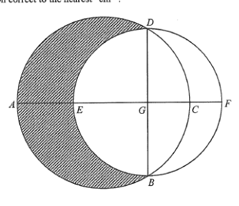

Circle ABCD (r = 20)Circle BEDF (r = 10√3)Chord / diameter BDLine AF & diameter EFCentre HCentre GShaded region
Question & Worked Solution
Question
In the figure, $AC$ is a diameter of the circle $ABCD$ while $BD$ and $EF$ are diameters of the circle $BEDF$. It is given that $C$ and $E$ lie on $AF$. Let $G$ be the point of intersection of $AF$ and $BD$. If $AG = 30\text{ cm}$ and $CG = 10\text{ cm}$, find the area of the shaded region correct to the nearest cm$^2$.
A. 209 cm$^2$
B. 367 cm$^2$
C. 383 cm$^2$
D. 540 cm$^2$

Figure (original exam diagram)
Step 1 · Radius of the big circle $ABCD$
Let $H$ be the centre of the circle $ABCD$. Since $AC$ is a diameter, the radius is half of $AC$:
$$AC = AG + CG = 30 + 10 = 40\ \text{cm}$$
$$r_{ABCD} = AH = HC = \frac{40}{2} = 20\ \text{cm}$$
💡 The key is to find $AC$ first using the two given segments $AG$ and $CG$.
Diameter of a Circle\(AC=2r\ \Longrightarrow\ r=\dfrac{AC}{2}\)Since \(AC=AG+CG=40\) cm is a diameter, the radius is \(20\) cm.
Step 2 · Locate centre $G$ of circle $BEDF$
$BD$ and $EF$ are diameters of the circle $BEDF$, so their intersection $G$ is its centre. Hence $GB = GD$.
$$GH = CH - CG = 20 - 10 = 10\ \text{cm}$$
Also $AF \perp BD$ (line joining centre and mid-point of chord $\perp$ chord), so $\triangle DHG$ is right-angled at $H$ with $DH = 20$ cm.
Step 3 · Angle $\angle DHG$
In $\triangle DHG$, using cosine on the right-angled side ratio:
💡 Use $\pi(20)^2\cdot\frac{120}{360}=\frac{400\pi}{3}$ and $\pi(10\sqrt3)^2\cdot\frac{90}{360}=\frac{300\pi}{4}=75\pi$.
Answer
D · 540 cm$^2$
PRACTICESimilar question — try it yourself
Question. In the figure, \(AC\) and \(BD\) are diameters of the circle \(ABCD\) meeting at \(H\), and \(BD\), \(EF\) are diameters of the circle \(BEDF\) meeting at \(G\). It is given that \(AG=24\ \text{cm}\) and \(CG=8\ \text{cm}\). Find the radius of the circle \(BEDF\).
Show the worked solution
Step 1. \(AC=AG+CG=32\ \text{cm}\), so the radius of \(ABCD\) is \(AH=16\ \text{cm}\).
Step 2. \(GH=AH-AG=16-8=8\ \text{cm}\).
Step 3. In the right-angled \(\triangle DHG\): \(\cos\angle DHG=\dfrac{GH}{DH}=\dfrac{8}{16}=\dfrac{1}{2}\), so \(\angle DHG=60^{\circ}\).
Step 4. \(DG=DH\sin60^{\circ}=16\times\dfrac{\sqrt{3}}{2}=8\sqrt{3}\ \text{cm}\), so the radius of \(BEDF\) is \(8\sqrt{3}\ \text{cm}\).